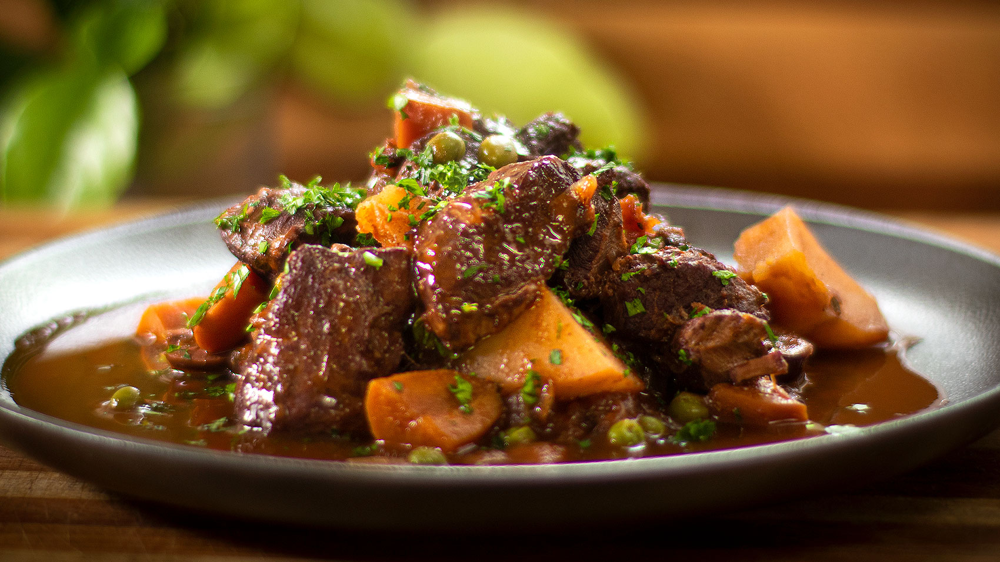

Classic Lamb Stew (Odin's Stew)

One of the most popular nordic specialties!
Made of some slow-cooked meat and root vegetables, both seasoned with earth spices, the classic nordic lamb stew is one of the best examples of scandinavian cuisine.
Ingredients
- Lamb meat
- Onion
- Carrots
- Parsnips
- Turnips
- Broth
- Butter
- Salt and pepper
- Thyme
- Sage
- Rosemary
Steps
- Melt butter in a big pot, add some onion and fry it nicely. Add the meat.
- Add vegetables and spices.
- Pour in the broth of your choice (broth based on meat is the best one for this recipe). Let the whole mixture cook slowly for at least one hour.
- Best served with some rye bread!